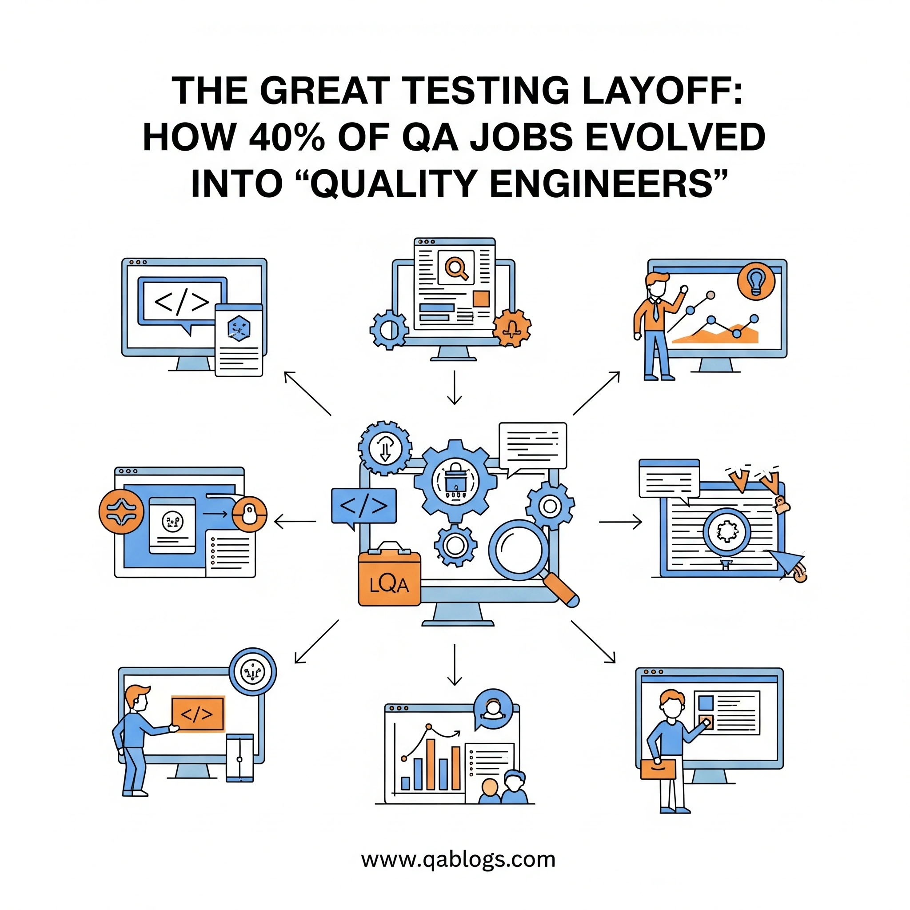

The Great Testing Layoff: How 40% of QA Jobs Evolved Into 'Quality Engineers'

Key Takeaways
- 40% of traditional QA jobs have evolved into Quality Engineering roles focused on automation, strategy, and systems thinking.
- DevOps, CI/CD, and automation have made manual testing teams obsolete, creating demand for hybrid technical and strategic skills.
- Quality Engineers prevent defects proactively, integrate with development, and drive business value through quality metrics.
- Career evolution requires upskilling in programming, automation, cloud, and business acumen for both individuals and organizations.
- Modern QA success is measured by value-based metrics like deployment frequency, customer satisfaction, and business impact.
The Great Testing Layoff: How 40% of QA Jobs Evolved Into 'Quality Engineers'
The software testing landscape has undergone a seismic shift in recent years, with traditional QA roles disappearing at an unprecedented rate. Industry reports suggest that nearly 40% of conventional testing positions have been eliminated or transformed into something entirely different. But this isn't the death of quality assurance—it's its evolution into something more powerful and strategic.
Welcome to the age of the Quality Engineer, where manual test execution has given way to test automation, quality advocacy, and systems thinking. This transformation represents one of the most significant career pivots in tech history, and understanding it is crucial for every QA professional's survival and success.
The Perfect Storm: Why Traditional QA Roles Are Vanishing
The Acceleration of Digital Transformation
The COVID-19 pandemic acted as a catalyst, forcing organizations to accelerate their digital transformation initiatives by 5-7 years in just 18 months. This acceleration created an environment where traditional, slower testing approaches became bottlenecks rather than safeguards.
Companies that previously relied on extensive manual testing cycles found themselves competing with organizations that could deploy features multiple times per day. The math was simple: adapt or become irrelevant.
The Rise of DevOps and Continuous Integration
DevOps practices have fundamentally changed how software is developed and delivered. In a world where code changes flow through automated pipelines dozens of times daily, the traditional "testing phase" at the end of development cycles became obsolete.
Consider Netflix, which deploys thousands of changes to production every day. Their approach requires quality to be built into every step of the process, not validated at the end. This shift eliminated the need for large teams of manual testers while creating demand for engineers who could embed quality practices throughout the development lifecycle.
The Economics of Automation
The financial pressure on organizations to do more with less has made test automation not just preferable, but essential. A single automated test suite can run hundreds of test cases in minutes, compared to days or weeks for manual execution.
Real-world impact: Companies like Spotify report that their shift to automated testing reduced their testing cycle time from 6 weeks to 2 hours while simultaneously improving test coverage from 60% to 95%.
The Evolution: From Tester to Quality Engineer
Redefining Quality Assurance
The traditional QA role focused on finding defects after development was complete. Today's Quality Engineers take a fundamentally different approach—they prevent defects from occurring in the first place.
This shift represents a move from reactive to proactive quality management:
- Traditional QA: "Let me test what you built"
- Quality Engineering: "Let me help you build it right"
The New Skill Stack
Quality Engineers possess a hybrid skill set that combines traditional testing knowledge with modern engineering practices:
Technical Skills:
- Programming proficiency (Python, Java, JavaScript)
- Test automation frameworks (Selenium, Cypress, Playwright)
- CI/CD pipeline integration
- Cloud platform knowledge (AWS, Azure, GCP)
- API testing and microservices architecture
- Performance testing and monitoring
Strategic Skills:
- Risk assessment and mitigation
- Quality metrics and analytics
- Process optimization
- Cross-functional collaboration
- Business domain expertise
The Mindset Transformation
Perhaps the most crucial change is the shift in mindset. Quality Engineers think like product owners, understanding that their role is to ensure customer satisfaction, not just absence of bugs.
They ask questions like:
- "How can we prevent this class of defects?"
- "What quality metrics matter most to our users?"
- "How can we make quality everyone's responsibility?"
Industry Case Studies: The Transformation in Action
Case Study 1: Microsoft's Testing Evolution
Microsoft's transformation from a traditional testing model to a quality engineering approach provides a compelling example of this evolution. In 2014, Microsoft eliminated dedicated testing teams and embedded quality responsibilities within development teams.
Results:
- 30% reduction in post-release defects
- 50% faster time-to-market
- Higher developer satisfaction scores
- Improved customer experience metrics
Case Study 2: Google's Approach to Quality
Google pioneered the concept of "Software Engineers in Test" (SET) and "Test Engineers" (TE), roles that blend development and testing skills. Their approach emphasizes:
- Building testability into products from day one
- Creating tools that make testing easier for developers
- Focusing on user-centric quality metrics
Case Study 3: Amazon's Two-Pizza Team Model
Amazon's approach to quality engineering aligns with their famous "two-pizza team" philosophy. Each small, autonomous team owns their product's quality from development through production.
Key principles:
- "You build it, you test it, you run it"
- Automated testing as a prerequisite for deployment
- Continuous monitoring and feedback loops
The Skills Gap: What Traditional Testers Are Missing
Technical Proficiency Gaps
Many traditional testers find themselves unprepared for the technical demands of quality engineering roles:
Programming Skills: While manual testers could succeed with basic scripting knowledge, Quality Engineers need solid programming fundamentals to build effective test automation and tooling.
Infrastructure Understanding: Modern quality engineering requires understanding of containerization, cloud platforms, and infrastructure as code.
Data Analysis: Quality Engineers must interpret metrics, identify trends, and make data-driven decisions about quality improvements.
Strategic Thinking Gaps
The role expansion beyond testing requires new perspectives:
Business Acumen: Understanding how quality impacts business outcomes, not just technical metrics.
Risk Management: Prioritizing testing efforts based on business risk, not just technical complexity.
Communication Skills: Articulating quality concerns to stakeholders who may not have technical backgrounds.
The Path Forward: Strategies for Career Evolution
For Individual Professionals
Skill Development Roadmap:
- Master a Programming Language: Start with Python or JavaScript, focusing on practical applications in testing.
- Learn Test Automation: Begin with web automation using tools like Selenium or Cypress, then expand to API and mobile testing.
- Understand CI/CD: Learn how to integrate tests into deployment pipelines using tools like Jenkins, GitLab CI, or GitHub Actions.
- Develop Cloud Skills: Gain experience with cloud platforms and understand how to test distributed systems.
- Build Business Knowledge: Understand your organization's business model and how quality impacts key metrics.
For Organizations
Transformation Strategies:
- Invest in Training: Provide comprehensive upskilling programs for existing QA staff.
- Create Hybrid Roles: Develop career paths that bridge traditional testing and engineering skills.
- Foster Collaboration: Break down silos between development and QA teams.
- Implement Gradual Change: Phase the transformation to allow for learning and adaptation.
The Quality Engineering Toolkit
Essential Tools and Technologies
Test Automation Frameworks:
- Selenium: Still the most widely used for web application testing
- Cypress: Modern alternative with better developer experience
- Playwright: Microsoft's cross-browser automation solution
- Appium: Mobile application testing standard
CI/CD Integration:
- Jenkins: Most popular open-source automation server
- GitLab CI: Integrated with version control
- GitHub Actions: Cloud-native CI/CD solution
- Azure DevOps: Microsoft's complete DevOps platform
Performance and Monitoring:
- JMeter: Open-source load testing tool
- LoadRunner: Enterprise-grade performance testing
- New Relic: Application performance monitoring
- Datadog: Infrastructure and application monitoring
Emerging Technologies
AI and Machine Learning in Testing:
- Intelligent test case generation
- Predictive analytics for defect detection
- Visual testing using computer vision
- Natural language processing for test documentation
Low-Code/No-Code Solutions:
- Democratizing test automation
- Enabling non-technical team members to contribute
- Accelerating test creation and maintenance
Measuring Success: Quality Engineering Metrics
Traditional vs. Modern Metrics
Traditional QA Metrics:
- Test cases executed
- Defects found
- Test coverage percentage
- Time to complete testing
Quality Engineering Metrics:
- Deployment frequency
- Lead time for changes
- Mean time to recovery
- Change failure rate
- Customer satisfaction scores
- Business impact of quality initiatives
The Shift to Value-Based Metrics
Modern quality engineering focuses on metrics that directly correlate with business value:
Customer-Centric Metrics:
- User satisfaction scores
- Feature adoption rates
- Customer churn related to quality issues
- Support ticket volume and resolution time
Business Impact Metrics:
- Revenue protected by quality initiatives
- Cost avoidance through early defect detection
- Time-to-market improvements
- Developer productivity gains
Challenges and Solutions in the Transition
Common Obstacles
Resistance to Change: Many organizations and individuals resist the shift from familiar manual testing approaches.
Skill Gaps: The technical requirements of quality engineering can seem overwhelming to traditional testers.
Tool Complexity: The modern testing toolkit requires significant learning investment.
Cultural Barriers: Breaking down silos between development and QA teams requires organizational commitment.
Practical Solutions
Incremental Adoption: Start with small automation projects and gradually expand scope.
Mentorship Programs: Pair experienced engineers with transitioning QA professionals.
Cross-Training: Encourage developers to learn testing skills and testers to learn development practices.
Leadership Support: Ensure management understands and supports the transformation.
The Future of Quality Engineering
Emerging Trends
Shift-Left Testing: Moving testing activities earlier in the development lifecycle to catch issues sooner and reduce costs.
Shift-Right Testing: Extending testing into production environments with techniques like canary deployments and A/B testing.
Quality Engineering as a Service: Specialized consulting and managed services for quality engineering initiatives.
AI-Powered Quality: Machine learning algorithms that can predict defects, generate test cases, and optimize testing strategies.
The Next Decade
The evolution of quality engineering will likely be driven by:
- Increased Automation: More sophisticated AI and ML integration in testing processes.
- Cloud-Native Testing: Testing strategies designed specifically for cloud-native architectures.
- Customer-Centric Quality: Direct integration of customer feedback into quality processes.
- Predictive Quality: Using data analytics to prevent quality issues before they occur.
Practical Takeaways for QA Professionals
Immediate Actions
- Assess Your Current Skills: Honestly evaluate your technical capabilities against modern quality engineering requirements.
- Create a Learning Plan: Develop a structured approach to acquiring new skills, starting with the most critical gaps.
- Build a Portfolio: Create automation projects that demonstrate your evolving capabilities.
- Network and Learn: Connect with quality engineering communities and attend relevant conferences.
- Experiment with Tools: Set up testing environments and practice with modern tools and frameworks.
Long-term Strategy
Career Positioning: Position yourself as a quality advocate who understands both technical and business aspects of quality.
Continuous Learning: Commit to ongoing education as the field continues to evolve rapidly.
Specialization: Consider developing expertise in specific areas like security testing, performance engineering, or accessibility.
Leadership Development: Develop skills in mentoring, process improvement, and strategic planning.
Conclusion: Embracing the Quality Engineering Future
The transformation from traditional QA to quality engineering represents more than a job title change—it's a fundamental reimagining of how quality fits into modern software development. The 40% of QA roles that have evolved into quality engineering positions haven't been lost; they've been elevated to have greater impact and strategic importance.
This evolution offers exciting opportunities for professionals willing to adapt and grow. Quality Engineers command higher salaries, have more influence on product decisions, and work with cutting-edge technologies. However, the transition requires significant investment in learning and skill development.
The organizations that successfully navigate this transformation will be those that invest in their people, embrace new technologies, and understand that quality is everyone's responsibility. For individual professionals, the choice is clear: evolve with the industry or risk being left behind.
Ready to transform your QA career? Start by assessing your current skills against the quality engineering requirements outlined in this post. Identify the biggest gaps and create a learning plan to address them. The future of quality assurance is quality engineering—and it's time to be part of that future.
The great testing layoff wasn't an ending—it was a beginning. The question isn't whether this transformation will continue, but whether you'll be leading it or watching from the sidelines.
Join Our Community of QA Professionals
Get exclusive access to in-depth articles, testing strategies, and industry insights. Stay ahead of the curve with our expert-curated content delivered straight to your inbox.
Nikunj Mistri
Founder, QA Blogs
About the Author